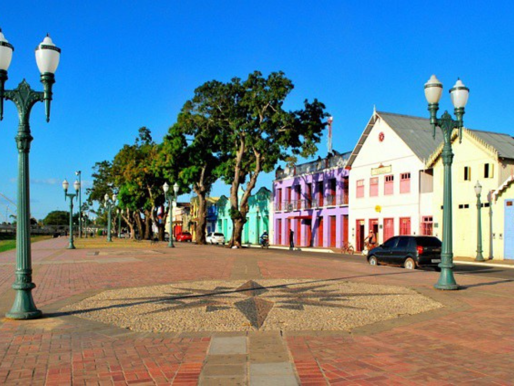

O Acre é um estado localizado na região Norte do Brasil, conhecido por sua grande área de floresta amazônica e rica biodiversidade. Sua capital é Rio Branco, a cidade mais populosa do estado. O Acre faz fronteira com a Bolívia e o Peru, o que contribui para sua diversidade cultural. A economia acreana é baseada no extrativismo vegetal, na agricultura, na pecuária e no comércio. O estado também ficou conhecido pela atuação de Chico Mendes, importante defensor da preservação da Amazônia e dos direitos dos trabalhadores da floresta.

Voltar